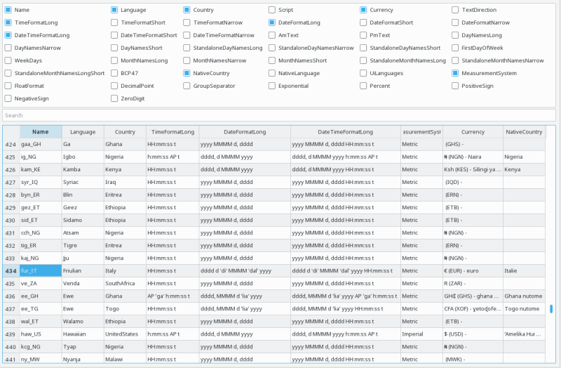
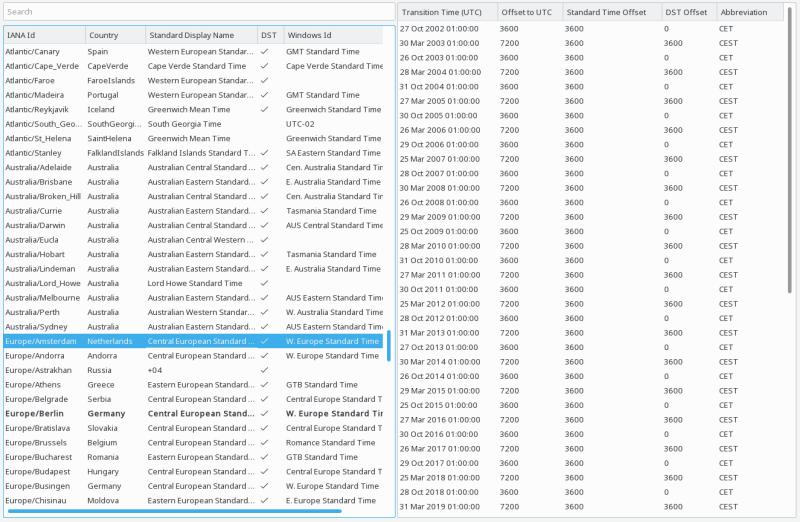

The locale browser allows you to inspect static databases provided by Qt and/or the operating system around localization. This data is typically independent of your application, and includes:
Each database is represented as its own tab in the GammaRay locale browser.
The locale browser is allowing you to inspect the details of every QLocale configuration present on the target system.

The upper area allows to select the aspects of the locales you are interested in (for example, date/time settings, currency-related information, number formatting rules, and so on). This translates to columns in the table below. Each row in the lower section of the locale browser corresponds with a QLocale configuration present on the target system (that is. typically one per country/region). You can use the filter on top to quickly find the country/region you are interested in.
The timezone tab allows you to inspect the timezone database as seen by your application.

The timezone browser consists of two parts. The left side shows all known timezones including some of their properties, names and identifiers, The right side shows all known time zone transitions for currently selected timezone, including both regular DST transitions as well as irregular transitions that occurred for whatever reason. This view is limited to 30 transitions before and after the current date, as the list is potentially infinite for timezones with recurring DST transitions.
The current system time zone is highlighted bold.